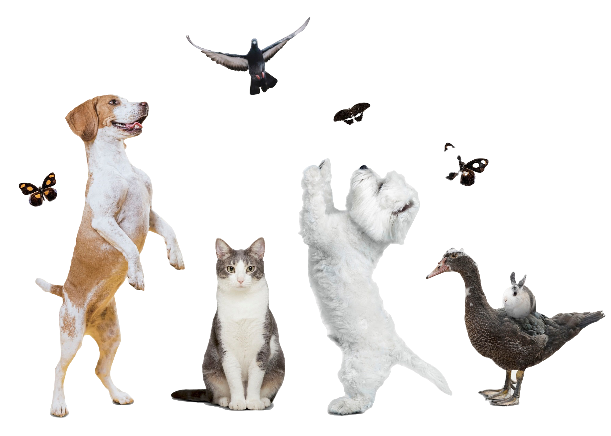

Multimedia: mascotas
A continuación podrás ver diferentes tipos de multimedia sobre mascotas.
Imágenes
Grupo de animales con fondo transparente. Imágen PNG

GIF de varios perros
Imagen de un grupo de mascotas
Videos
Video de unos pájaros. Formato WEBM
Tu navegador no soporta el formato de video WebM.
Video de un gato. Formato OGV
Tu navegador no soporta el formato de video Ogg.
Video de unos perros. Formato MP4
Tu navegador no soporta el formato de video MP4.
Video de YouTube
Audio
Audio de un canario cantando
Tu navegador no soporta el formato de audio MP3.
Audio de un gato maullando
Tu navegador no soporta el formato de audio WAV.
Audio de un perro ladrando
Tu navegador no soporta el formato de audio Ogg.